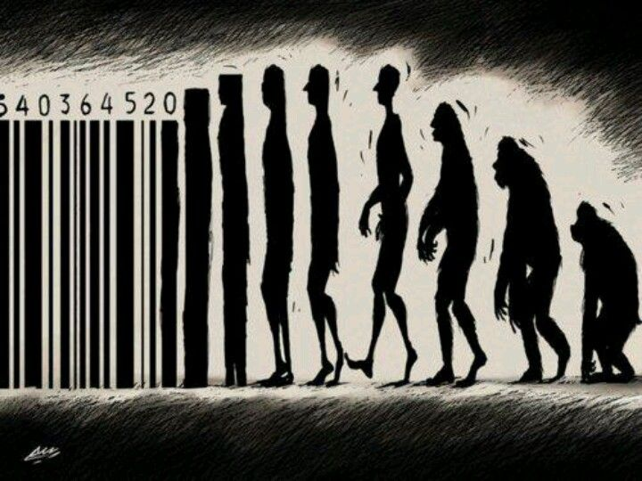

The etymology of the word "traffic" can be traced back to 14th century France where the noun "trafique" translated to "trade and commerce" and the verb "trafficking" meant "to buy and sell" (Etymology Dictionary, 2018). Today the word traffic (besides its most common usage, having to do with "the movement or transportation of vehicles, ships or other objects") means "to trade or deal in specific commodity or service, often of an illegal nature" (Dictionary, 2018).
Today, in a human trafficking context, it seems that "trafficking" is more commonly used as a verb than as a noun. This is contrary to how it was mostly used during the inception of human trafficking as a legal term. Comparing todays usage of "trafficking" to its original meaning, it could be argued that the it means "to buy or sell". By combining the verb "trafficking" with a noun/object, the sentence "opium trafficking" will literally translate to "buying and selling opium". "Human trafficking" then translates to "buying and selling humans" or perhaps "trading in humans".
Sex Trafficking is an Inaccurate Term
Semantics undergo changes over time witch also is the case with human trafficking. Today the media often use "human trafficking" and "sex trafficking" interchangeably. Others, like the UNODC, use "sex trafficking" to describe a type of human trafficking. In accordance with the logic suggested above "sex trafficking" translates to "buying and selling sex". But there already exist another word for "buying and selling sex" which is "prostitution".
"However, the problem isn't the existence of semantically similar words, but rather that these words are conceptually different."
However, the problem isn't the existence of semantically (used as a word's literal meaning) similar words, but rather that these words are conceptually different. This is regardless of whether "sex trafficking" is equated with "human trafficking" or merely functions as a specific type of human trafficking, since there in both cases exists an intrinsic discrepancy between their semantic and conceptual meaning – their names are misleading because they don't actually describe the concepts that they are attempting to describe.
Human trafficking was conceptualized in a legal context back in the end of the nineteenth and beginning of the twentieth century and is still used as legal instrument in a modern-day context. Essentially trafficking in persons can be described as criminal process where: a trafficker by means of coercion recruits a victim who is treated like a commodity that can be bought and sold in the marketplace or exploited for a diverse set of gains. In this perspective, the literal meaning of "buying and selling humans" fits the concept. But by replacing "buying and selling humans" with "buying and selling sex" it no longer add up.
The human trafficking offence is carried out by the trafficker, not by the victim, which is why it is grammatically counterintuitive to create a clause (the offence) by coupling the verb "trafficking" with the noun "sex". Because "sex", in this context, define the object (the type of exploitation) that the victim is forced into doing and not the type of crime committed by the trafficker. It is only logical that the trafficker always assumes the position of the implied subject in the clause who does the verb "trafficking".

Instead, "sex trafficking" semantically points to the direct transaction of selling and buying sex which is called prostitution. In prostitution the implied subject of the clause is the individual who buy or sell sex. In the legal sense, human trafficking laws sets out to punish the trafficker - not the victim who is forced into commercial sexual exploitation.
Simply put, human traffickers are in the business of buying and selling humans. They don’t themselves provide sex services, factory labour, domestic services etc., but instead facilitate or exploit other people who possess the properties necessary in producing these services. It would make semantically sense to describe types of human trafficking as "child trafficking", "male trafficking", or even "white (women) trafficking" as done years back.
In a modern-day context "human trafficking" translates to "trade in humans". And despite the discussion above, the argument could be made that the words "sex" and "trafficking", combined in the form of "sex trafficking", has semantically evolved into meaning "human trafficking" since this notion seems to be held by a significant amount of people.